A full meal!
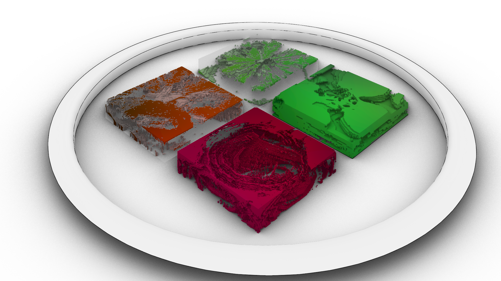
For this assignment we cut several fruits and vegies and manipulated their colors using the following code:
Onion
Cutting Veggies and Fruits and manipulating their colors!
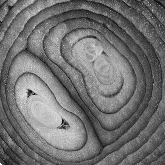
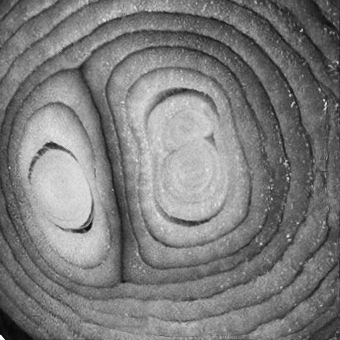
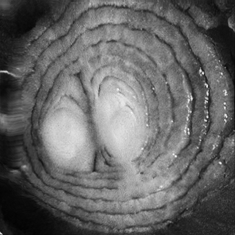
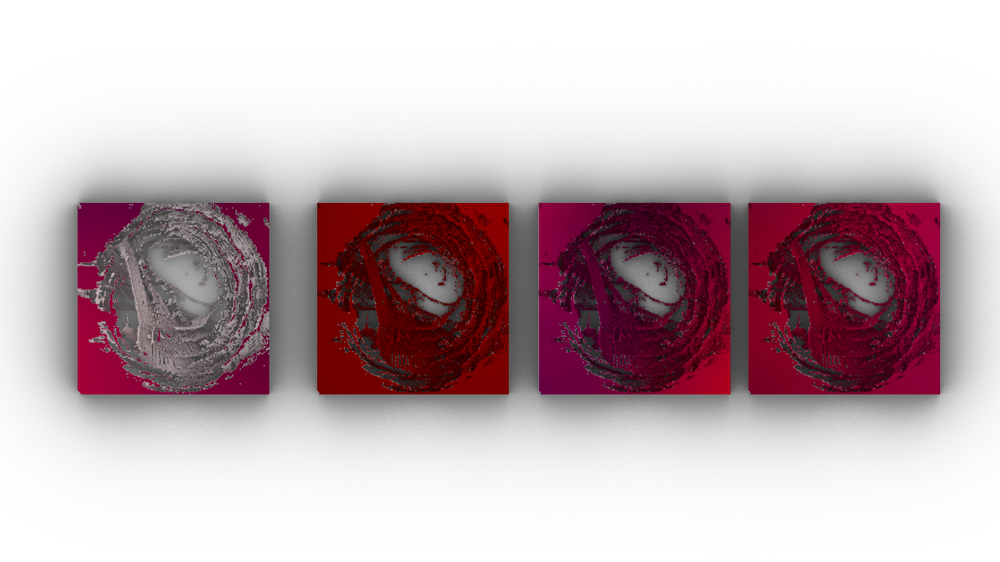
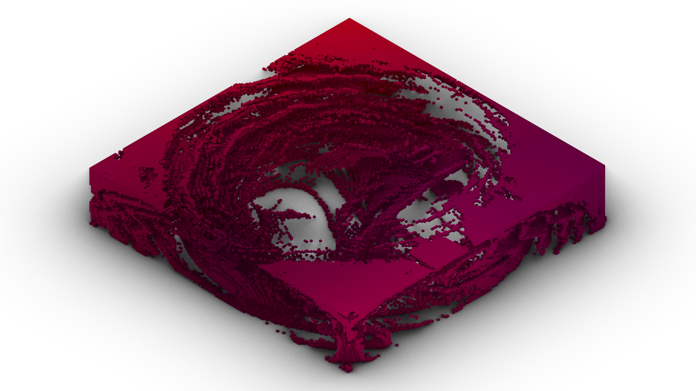
Pepper
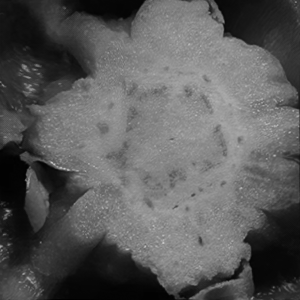
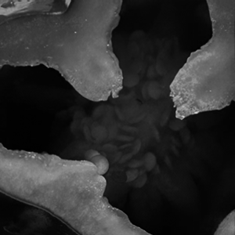
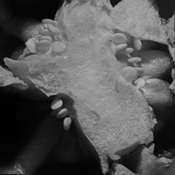
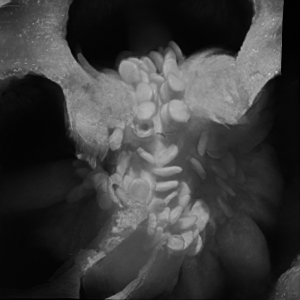
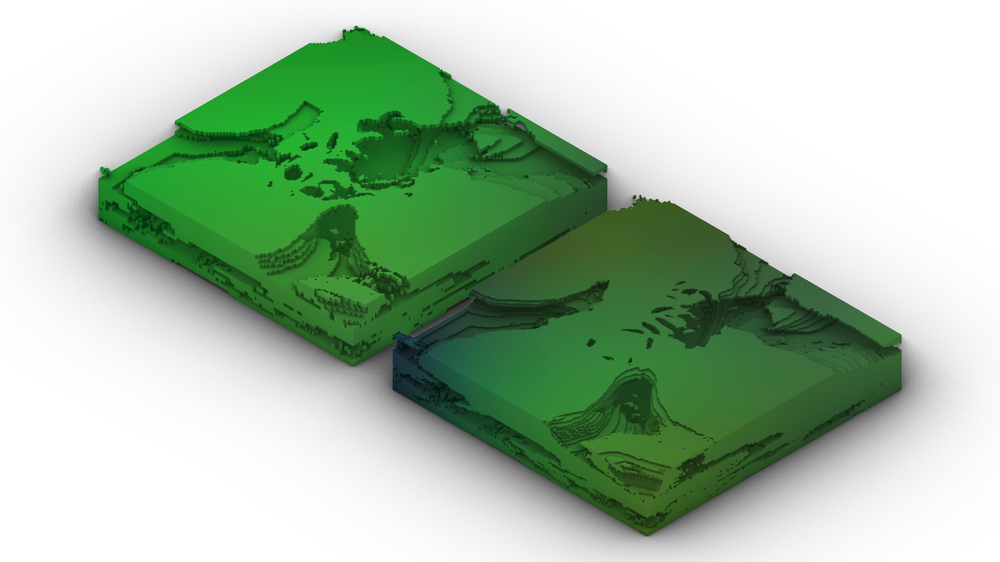
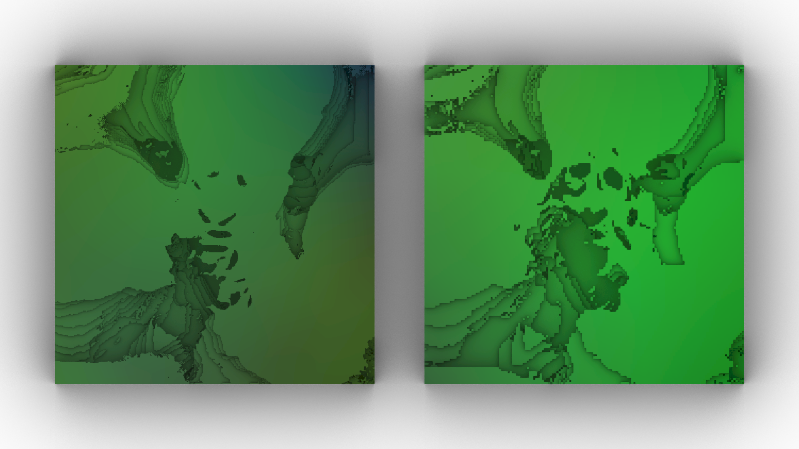
Lime

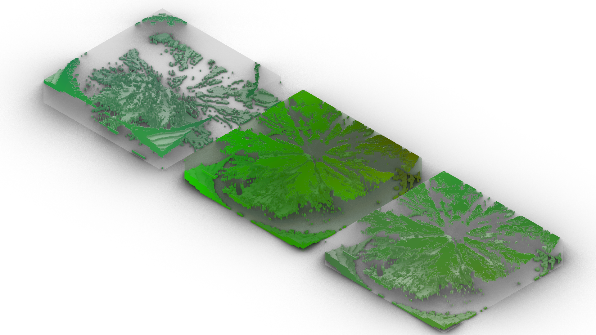